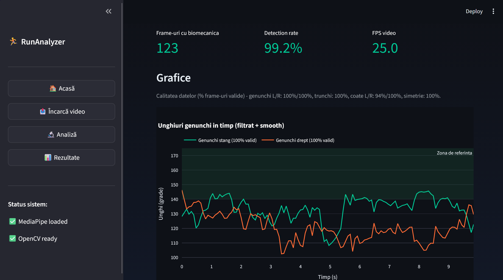

RUNANALYZER
Sistem de analiză a tehnicii de alergare folosind viziune artificială
1. Problema
Analiza tehnicii de alergare este adesea subiectivă și greu de repetat între evaluatori. Soluția propusă extrage automat informații din videoclipuri obișnuite, fără echipament specializat.
- feedback accesibil pentru sportivi amatori
- metrici reproductibile
- bază pentru monitorizare în timp
2. Obiective
Principal: aplicație care analizează automat tehnica de alergare din video.
- Pose estimation (MediaPipe)
- Keypoints: umăr, cot, șold, genunchi, gleznă
- Parametri biomecanici per frame
- Vizualizare web (Streamlit)
8. Contribuții
- Pipeline video → pose → biomecanică → UI
- Metrici + filtre de calitate a datelor
- Interfață web pentru testare practică
3. Arhitectură & Tehnologii
Procesare frame cu frame, export video adnotat și grafice temporale.
Pipeline
Video
→
OpenCV
→
MediaPipe
→
Biomecanică
→
Streamlit
4. Metrici calculate
- Unghi genunchi (stâng / drept)
- Înclinare trunchi
- Unghi coate
- Simetrie genunchi
- Step length

Aplicație — rezultate (Streamlit)6. Rezultate & limitări
- Detecție pose + metrici biomecanice per frame
- Grafice filtrate (outlieri + smoothing)
- Limitări: single-person, ocluzii, 2D orientativ
Concluzie
Fezabilitate demonstrată pentru analiza tehnicii de alergare din video obișnuit, cu extensii viitoare: feedback automat, faze de pas, scor compozit.